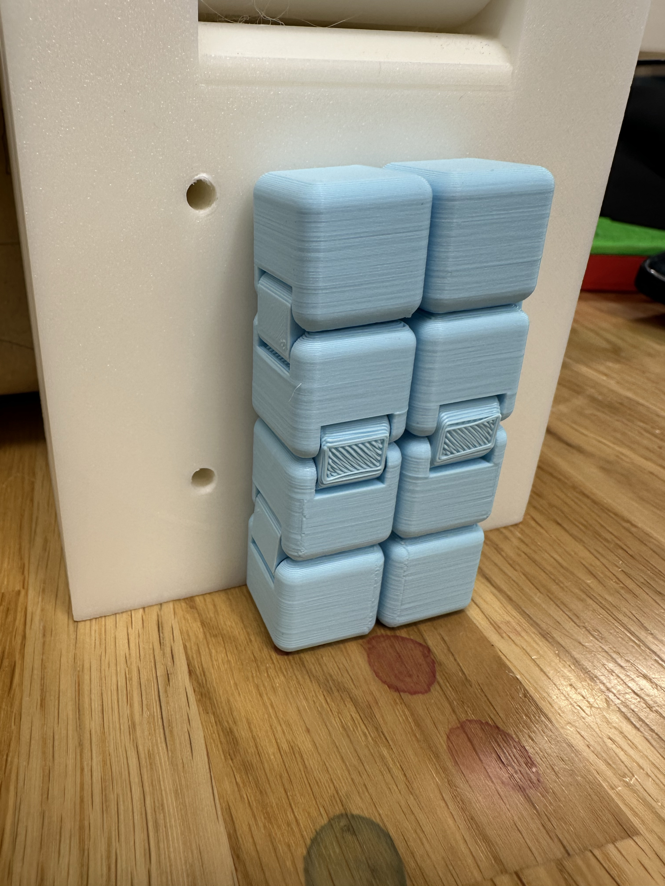
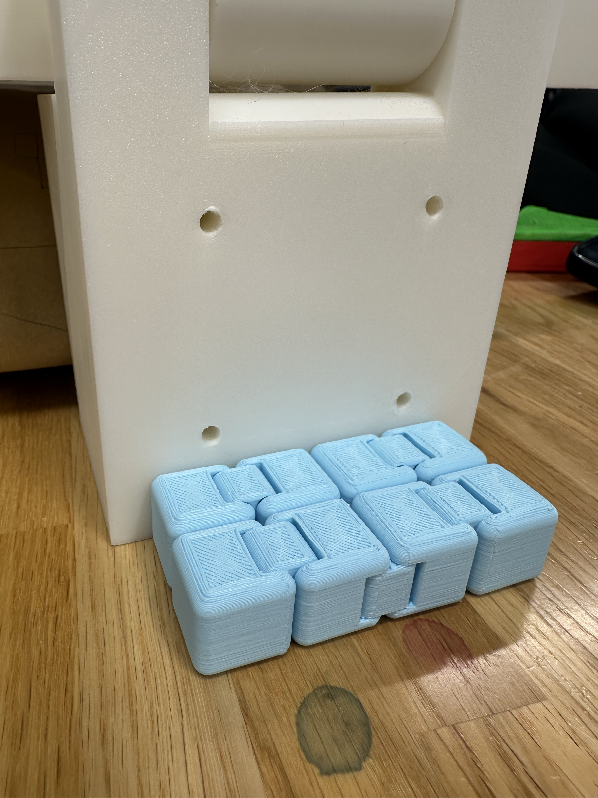
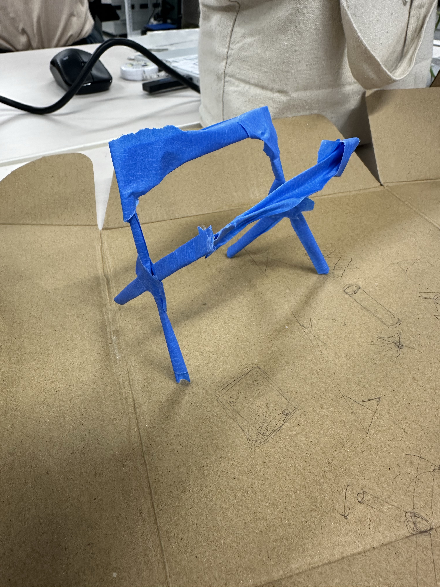

鎌倉プロジェクトで椅子を作ってきて、その可能性をさらに広げたいと思い、引き続き椅子を製作することにしました。
まず、今までのモデルをそのままで必要なクオリティでつくれるようにします。
また、それと平行して新しいデザインの椅子も考える



この構造だと壁に固定したままで必要なサイズに三段階変形させることができて、座る面も常に内側に入っていて
衛生面もしっかり確保されている。
しかし、これを実寸で３Dプリントするには大きすぎて、かなりパーツを分けて印刷する必要があり、かなり手間がかかるので
大量生産にはあまり向いていないと感じた。

また、今回のターポリンを使ったプロジェクトとも関連して、ターポリンを再利用した椅子も作ってみようと考えています。
この異素材を組み合わせることでさらにコンパクトな椅子を作れると思います！！！